|
Training Index
By MageLang Institute
[About This Short Course
|
Magercises]
In this section you will:
-
Learn about the Java Foundation Course JFC/Swing-specific
events
-
Learn the basic conceptual model for the JFC/Swing
Components
-
Explore complex graphical user interfaces (GUI) architectures
with JFC/Swing
-
Gain an understanding of the JFC/Swing text document model
-
Learn about the Swing table architecture
-
Create a custom look and feel
Course Outline
Swing Events Overview
Just like the AWT package, Swing has its own event package for Swing-specific
events. There are events and event listeners within the package, while the
event sources exist outside the package.
Swing Event Objects
AncestorEvent |
ancestor added, moved, removed |
CaretEvent |
text caret changed |
ChangeEvent |
state change |
DocumentEvent |
document attributes change, content inserted, content removed
(Note: interface) |
HyperlinkEvent |
hyperlink activated, entered, exited |
InternalFrameEvent |
frame activated, closed, closing, deactivated,
deiconified, iconified, opened |
ListDataEvent |
contents changed, interval added or removed |
ListSelectionEvent |
list selection status change |
MenuDragMouseEvent |
menu drag mouse dragged, entered, exited, released |
MenuEvent |
menu selected/posted, deselected, canceled |
MenuKeyEvent |
menu key pressed, released, typed |
PopupMenuEvent |
popup menu selected/posted, becoming visible, becoming invisible
|
TableColumnModelEvent |
table column added, resized, moved, removed,
selection changed |
TableModelEvent |
table model change |
TreeExpansionEvent |
tree expanded or collapsed |
TreeModelEvent |
tree nodes changed, inserted, removed, or drastically
changed |
TreeSelectionEvent |
tree selection status changed |
UndoableEditEvent |
undoable operation happened |
While most of the new events are related to the more complicated
Model/View/Controller architecture, to be described
later, the MenuEvent
adds some frequently requested capabilities. For instance, if you
would like to find out when a JMenu is posted, possibly
to configure the menu contents, add a MenuListener and
wait for its menuSelected() method to be called.
JMenu file = new JMenu ("File");
file.addMenuListener (new MenuListener() {
public void menuSelected (MenuEvent e) {
System.out.println ("Selected");
}
public void menuDeselected (MenuEvent e) {
System.out.println ("Deselected");
}
public void menuCanceled (MenuEvent e) {
System.out.println ("Canceled");
}
});
|
Swing Event Listeners
Each listener interface is paired with one event type and (usually) contains
a method for each type of event the event class embodies. For instance, the
ListDataListener contains three methods, one for each type of
event that the ListDataEvent has: contentsChanged(),
intervalAdded(), and intervalRemoved().
Summary of Listener interfaces and their methods
|
Interface |
Method(s) |
AncestorListener |
ancestorAdded (AncestorEvent) |
ancestorMoved (AncestorEvent) |
ancestorRemoved (AncestorEvent) |
CaretListener |
caretUpdate (CaretEvent) |
CellEditorListener |
editingCanceled (ChangeEvent) |
editingStopped (ChangeEvent) |
ChangeListener |
stateChanged (ChangeEvent) |
DocumentListener |
changedUpdate (DocumentEvent) |
insertUpdate (DocumentEvent) |
removeUpdate (DocumentEvent) |
HyperlinkListener |
hyperlinkUpdate (HyperlinkEvent) |
InternalFrameListener |
internalFrameActivated (InternalFrameEvent) |
internalFrameClosed (InternalFrameEvent) |
internalFrameClosing (InternalFrameEvent) |
internalFrameDeactivated (InternalFrameEvent) |
internalFrameDeiconified (InternalFrameEvent) |
internalFrameIconified (InternalFrameEvent) |
internalFrameOpened (InternalFrameEvent) |
ListDataListener |
contentsChanged (ListDataEvent) |
intervalAdded (ListDataEvent) |
intervalRemoved (ListDataEvent) |
ListSelectionListener |
valueChanged (ListSelectionEvent) |
MenuDragMouseListener |
menuDragMouseDragged (MenuDragMouseEvent) |
menuDragMouseEntered (MenuDragMouseEvent) |
menuDragMouseExited (MenuDragMouseEvent) |
menuDragMouseReleased (MenuDragMouseEvent) |
MenuKeyListener |
menuKeyPressed (MenuKeyEvent) |
menuKeyReleased (MenuKeyEvent) |
menuKeyTyped (MenuKeyEvent) |
MenuListener |
menuCanceled (MenuEvent) |
menuDeselected (MenuEvent) |
menuSelected (MenuEvent) |
MouseInputListener
(implements MouseListener and
MouseMotionListener) |
mouseClicked (MouseEvent) |
mouseDragged (MouseEvent) |
mouseEntered (MouseEvent) |
mouseExited (MouseEvent) |
mouseMoved (MouseEvent) |
mousePressed (MouseEvent) |
mouseReleased (MouseEvent) |
PopupMenuListener |
popupmenuCanceled (PopupMenuEvent) |
popupMenuWillBecomeInvisible (PopupMenuEvent) |
popupMenuWillBecomeVisible (PopupMenuEvent) |
TableColumnModelListener |
columnAdded (TableColumnModelEvent) |
columnMarginChanged (ChangeEvent) |
columnMoved (TableColumnModelEvent) |
columnRemoved (TableColumnModelEvent) |
columnSelectionChanged (ListSelectionEvent) |
TableModelListener |
tableChanged (TableModelEvent) |
TreeExpansionListener |
treeCollapsed (TreeExpansionEvent) |
treeExpanded (TreeExpansionEvent) |
TreeModelListener |
treeNodesChanged (TreeModelEvent) |
treeNodesInserted (TreeModelEvent) |
treeNodesRemoved (TreeModelEvent) |
treeStructureChanged (TreeModelEvent) |
TreeSelectionListener |
valueChanged (TreeSelectionEvent) |
UndoableEditListener |
undoableEditHappened (UndoableEditEvent) |
Unlike the AWT event listener classes, there are few adapter classes at
this time. If you have an interest in only one of the event sub-types,
you have to implement all the methods of the interface. The two adapters
that do exist are InternalFrameAdapter and
MouseInputAdapter.
Also, like the PropertyChangeSupport class for JavaBeans,
Swing provides a utility class to manage event listener lists and delegate work.
The class EventListenerList is available for all
listener types. It is the responsibility of the class that maintains the
list to provide the appropriate type-safety, to ensure only a certain type
of listener is added.
EventListenerList listenerList =
new EventListenerList();
AEvent aEvent = null;
public void addAListener(AListener l) {
listenerList.add (AListener.class, l);
}
public void removeFooListener (AListenerl) {
listenerList.remove (AListener.class, l);
}
protected void fireAEvent() {
// Must return non-null array
Object listeners[] = listenerList.getListenerList();
// Process the listeners last to first, notifying
// those that are interested in this event
for (int i = listeners.length-2; i>=0; i-=2) {
if (listeners[i] == AListener.class) {
// Lazily create the event:
if (aEvent == null)
aEvent = new AEvent(this);
((AListener)listeners[i+1]).someAHappened(aEvent);
}
}
}
|
Swing Event Sources
The Swing events originate from its various components. The table below
represents the list of event sources. Do keep in mind the class hierarchy.
For instance, when AbstractButton is an event source, so
are all its children. Also, all the JComponent subclasses
serve as sources for all the generic java.awt.Component and
java.awt.Container events.
This table means that for each class in the left column, there is an
addXXX() and removeXXX() method for the event
listener in the right column, meaning the class is an event source.
AbstractButton
DefaultButtonModel
JComboBox
JFileChooser
JTextField
Timer |
ActionListener |
JScrollBar |
AdjustmentListener |
JComponent |
AncestorListener |
JTextComponent |
CaretListener |
DefaultCellEditor
DefaultTreeCellEditor |
CellEditorListener |
AbstractButton
DefaultBoundedRangeModel
DefaultButtonModel
DefaultCaret
DefaultColorSelectionModel
DefaultSingleSelectionModel
JProgressBar
JSlider
JTabbedPane
JViewport
MenuSelectionManager
StyleContext
StyleContext.NamedStyle |
ChangeListener |
DefaultTableColumnModel |
ColumnModelListener |
AbstractDocument
DefaultStyledDocument |
DocumentListener |
JEditorPane |
HyperlinkListener |
JInternalFrame |
InternalFrameListener |
AbstractButton
DefaultButtonModel
JComboBox |
ItemListener |
AbstractListModel |
ListDataListener |
DefaultListSelectionModel
JList |
ListSelectionListener |
JMenuItem |
MenuDragMouseListener |
JMenuItem |
MenuKeyListener |
JMenu |
MenuListener |
JPopupMenu |
PopupMenuListener |
AbstractAction
DefaultTreeSelectionModel
JComponent
SwingPropertyChangeSupport
TableColumn
UIDefaults
UIManager |
PropertyChangeListener |
AbstractTableModel |
TableModelListener |
JTree |
TreeExpansionListener |
DefaultTreeModel |
TreeModelListener |
DefaultTreeSelectionModel
JTree |
TreeSelectionListener |
AbstractDocument
UndoableEditSupport |
UndoableEditListener |
JComponent |
VetoableChangeListener |
Just as a refresher, the following table shows the inherited listeners from
Component, Container, and Window.
Component |
ComponentListener
FocusListener
InputMethodListener (Java 2)
KeyListener
MouseListener
MouseMotionListener
PropertyChangeListener (Java 2) |
Container |
ContainerListener |
Window |
WindowListener |
Model/View/Controller Architecture
There are a number of ways to approach using Swing to develop GUIs. As
shown in the first part of this course, you can use most of the Swing
widgets in the same way AWT widgets are used. If you take this approach,
the transition from AWT programming is very easy.
However, Swing gives the programmer a more powerful interface to the widgets.
Employing a technology called the Model/View/Controller (MVC) architecture,
the Swing team has given you the ability to control how widgets look, how
they respond to input, and, for some more complex widgets, how data is
represented.
This section provides some background information on MVC and its relationship
to Swing. If you want to see right away how to properly create a GUI with
Swing, skip ahead to the next section, "Designing a
Swing GUI."
Aside from a richer collection of widgets, the primary advantage of the Swing
Component set over AWT is its use of MVC. MVC is a design pattern often used
in building user interfaces (UI). In an MVC UI, there are three communicating
objects, the model, view, and controller. The model is the underlying logical
representation, the view is the visual representation, and the controller
specifies how to handle user input. When a model changes, it notifies all
views that depend on it. This separation of state and presentation allows
for two very powerful features.
-
You can base multiple views on the same model. For instance,
you can present a set of data in both table form and chart form.
As you update the data model, the model notifies both views and
gives each an opportunity to update itself.
-
Because models specify nothing about presentation, you can
modify or create views without affecting the underlying model.
A view uses a controller to specify its response mechanism. For instance,
the controller determines what action to take when receiving keyboard input.
Although the primary purpose of MVC is for building UIs, it can be used to
establish an analogous notification protocol between non-visual objects. A
model object can send change notifications to an arbitrary set of interested
objects without knowing details about those objects. The
Observer/Observable objects in java.util
have served this need well, since Java 1.0.
Swing Component Architecture and MVC
Swing represents components by a common variation of MVC in which view and
controller are combined into an object called a delegate.
Delegates both represent the model, as a view does, and translate user input
into the model, as a controller does. Communication between view and controller
is very complex. Combining the two simplifies the job of component design.
As an example, consider a checkbox widget. Regardless of visual representation,
it has a state that can be either true or false. This corresponds to the
checkbox's model. The way you represent these two states on the screen refers
to its delegate-view. When a user clicks the mouse on the checkbox, the
delegate-controller is responsible for notifying the model of the intended
state change. Commonly, the delegate associated with a checkbox uses a checked
box to represent the true state and an unchecked box to represent the false
state. It toggles the state when a user clicks within the box. In this way,
the delegate-view reflects the model and the delegate-controller translates
user input into the model.
Swing widgets are subclasses of JComponent, such as
JButton. At any given time, a JComponent has a
single model and a single delegate associated with it. Possible models for
a particular JComponent are classes that implement a model
interface specific to that JComponent. For a class to act
as a JButton's model, it must implement the
ButtonModel interface. Likewise, delegates are implementations
of a delegate interface specific to the JComponent. The
ButtonUI interface defines a JButton's delegate.
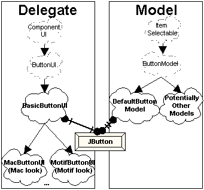
As stated earlier, a JComponent can have different models and
delegates. You access models with the setModel() and
getModel() methods, and delegates can be accessed with the
setUI() and getUI() methods.
Delegates and the ComponentUI Interface
All delegates, such as ButtonUI, extend the
ComponentUI interface and are part of the
javax.swing.plaf package. ComponentUI contains
basic functionality to define how a delegate renders a JComponent.
The primary method in this interface is one seen with applets, the
paint() method. Along with other methods, such as
getPreferredSize() and getMinimumSize(), these
ComponentUI methods describe the view portion of a delegate.
Specific subinterfaces of ComponentUI determine the controller
aspects of a delegate.
To take the JButton example to completion, look more closely
at the ButtonModel and ButtonUI interfaces and
their default implementations. ButtonModel has methods such
as isPressed() and setPressed() to reflect the
state of a button, independent of visual representation. ButtonUI
inherits most of its functionality from ComponentUI.
DefaultButtonModel is JButton's default model.
It is rare that its model will change; after all, a button is a button.
BasicButtonUI is the default delegate for JButton,
the specific delegate will more than likely be a subclass, depending upon the
particular UI currently set. For a Windows 95-like representation of a button,
the delegate would actually be WindowsButtonUI and is only
available on Win32 platforms. The other ButtonUI classes are
MotifButtonUI for the Motif look-and-feel delegate for buttons,
MetalButtonUI for the platform independent Metal look-and-feel,
as well as MacButtonUI for the Macintosh appearance (currently
available separately).
Look and Feel
Common to both AWT and Swing is the concept of decoupling the rendering of
a GUI from the Java classes that build the GUI. In AWT, each component has
an associated native, heavyweight, peer class that translates between a
Java component and a native operating system widget. For instance,
this means that the java.awt.Button component appears like
a Windows 95 button when running under Windows 95 and like a Motif button
when running under the Solaris operating system. However, the developer
has no input into this process. There is only one way to render a button under
Windows 95. The decoupling is simply a way to allow for platform independence.
The basis of Swing components is the lightweight component architecture
introduced in AWT 1.1. As such, components no longer have these heavyweight
peer classes nor do they use native operating system widgets. Instead, they
participate in the MVC framework described above.
Unlike AWT components, Swing components can appear multiple ways on the
same platform. This concept describes the Swing component's look and feel
(L&F).
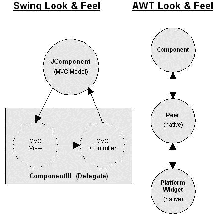
Look and Feel is "Pluggable"
Because of the modular nature of MVC, you can make Swing-based GUIs look
like Windows, the Macintosh, Motif, or other user-defined views with minimal
programming effort. Sun calls this property a Pluggable Look and Feel. You
can make such changes in visual representation at run-time. You accomplish
this with an object called a LookAndFeel, which maintains a
mapping of JComponents with ComponentUIs. Setting
the LookAndFeel for an application switches the entire GUI. To
make an application's interface appear like the Metal components, use the
following:
try {
UIManager.setLookAndFeel (
"javax.swing.plaf.metal.MetalLookAndFeel");
} catch (java.lang.ClassNotFoundException e) {
// Can't change look and feel
}
|
The Metal look and feel is a cross-platform Java-native look and
feel provided with Swing. The Metal look and feel is an attempt to create
a common appearance across different computing environments. The Metal
look and feel is actually the default look for Swing applications, so you
would more likely change the appearance to one of the others. For instance,
the following would change the look and feel to the user's native platform
look and feel:
try {
UIManager.setLookAndFeel (
UIManager.getCrossPlatformLookAndFeelClassName());
} catch (java.lang.ClassNotFoundException e) {
// Can't change look and feel
}
|
Designing a Swing GUI
Fortunately, you can ignore much of the MVC widget internals discussed
above for simple GUI design. You can approach widget placement in a GUI
with Swing in exactly the same way as AWT: by instantiating widgets and
adding them to containers. Additionally, two techniques use MVC to design
flexible, powerful GUIs.
-
Simple GUI Design: Instantiate widgets, add them to a
container, select a look and feel for the entire GUI.
-
Complex GUI Design: Although Swing doesn't directly
address this point, widgets can interact among themselves
in an MVC framework. One widget can act as a controller by
responding to user input and changing a data model, which,
in turn, forwards changes to other widgets acting as views.
-
Complex Widget Architecture: Some swing widgets such as
JList, JTree, and the text widgets
are most useful when the programmer defines and specifies the
model and part of the delegate. This way, for instance, you
can represent a group of line-item objects in a JList
widget.
The first two methods of GUI design are treated in depth in the following
paragraphs. The third is discussed in the individual widget descriptions.
Simple GUI Design with Swing
GUI design with Swing can be approached in the same way as AWT, by
instantiating components, adding them to a container, and setting up events
among them.
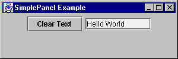
// import the symbols from AWT and Swing packages
import java.awt.*;
import java.awt.event.*;
import javax.swing.*;
// Subclass JPanel to place widgets in a panel
class SimplePanel extends JPanel {
// Declare the two components
JTextField textField;
JButton button;
// Add a constructor for our JPanel
// This is where most of the work will be done
public SimplePanel() {
// Create a JButton
button = new JButton("Clear Text");
// Add the JButton to the JPanel
add(button);
// Create a JTextField with 10 visible columns
textField = new JTextField(10);
// Add the JTextField to the JPanel
add(textField);
// Add a listener to the JButton
// that clears the JTextField
button.addActionListener(new ActionListener() {
public void actionPerformed(ActionEvent e) {
textField.setText("");
}
});
}
}
// Next, create a simple framework
// for displaying our panel
// This framework may be used for displaying other
// panels with minor modifications
// Subclass JFrame so you can display a window
public class SimplePanelTest extends JFrame {
// Set up constants for width and height of frame
static final int WIDTH = 300;
static final int HEIGHT = 100;
// Add a constructor for our frame.
SimplePanelTest(String title) {
// Set the title of the frame
super(title);
// Instantiate and add the SimplePanel to
//the frame
SimplePanel simplePanel = new SimplePanel();
Container c = getContentPane();
c.add(simplePanel, BorderLayout.CENTER);
}
// Create main method to execute the application
public static void main(String args[]) {
// instantiate a SimplePanelTest object
// so you can display it
JFrame frame =
new SimplePanelTest("SimplePanel Example");
// Create a WindowAdapter so the application
// is exited when the window is closed.
frame.addWindowListener(new WindowAdapter() {
public void windowClosing(WindowEvent e) {
System.exit(0);
}
});
// Set the size of the frame and show it
frame.setSize(WIDTH, HEIGHT);
frame.setVisible(true);
}
}
|
Complex GUI Design with Swing
This section deals primarily with how you handle events in a GUI. These are
described using two examples.
In the first, you handle events in a very simple AWT 1.1 style, with adapters
(similar to the previous example).
This example is followed by discussion of problems with this model and its
flexibility. Some alternatives are examined.
The second example uses MVC to design the GUI. It is far more complex, but
also more maintainable and flexible in the long run.
GUI Event Handling - Simple AWT Example
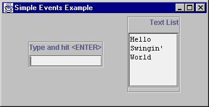
/* This is a basic application that demonstrates a
* simple way to establish interaction among widgets
* in a GUI. Its event framework is fine for simple
* applications. Some shortcomings will be outlined
* below. It places a JTextField and a JTextArea on
* the screen. An ActionListener is added to the
* JTextField, so that, upon entering text into the
* JTextField, a line with the same text is appended
* to the JTextArea.
*/
// First, import the AWT and Swing symbols
import java.awt.*;
import java.awt.event.*;
import javax.swing.*;
/* The class is going to extend JFrame
* Most of the work of setting up the GUI
* will be done in the constructor for the frame
* Additionally, add a main method so you can
* run it as an application
*/
public class SimpleEvents extends JFrame {
// Constants to specify width and height of frame
// Used below in the main method
static final int WIDTH=350;
static final int HEIGHT=180;
// Declare a JTextField for getting user input
JTextField textField;
// Declare a JTextArea for receiving lines of
// text from textField
JTextArea textList;
// Declare a JScrollPane to hold the JTextArea
JScrollPane pane;
// Constructor for the frame class
public SimpleEvents(String lab) {
// Call JFrame's constructor
// This will set the label of the JFrame
super(lab);
/******* Create a container for the textField ****/
// Instantiate a JPanel
JPanel textPanel = new JPanel();
// Give it a border so it stands out
// By default, panels have no border
textPanel.setBorder (
BorderFactory.createEtchedBorder());
// Set the layout of the textPanel to
// a BorderLayout
textPanel.setLayout(new BorderLayout());
// Create a label and add it to the panel
JLabel textTitle =
new JLabel("Type and hit <ENTER>");
textPanel.add(textTitle, BorderLayout.NORTH);
// Instantiate JTextField and add it to the
// textPanel
textField = new JTextField();
textPanel.add(textField, BorderLayout.SOUTH);
// Add a strut to the textPanel as a bottom margin
textPanel.add(Box.createVerticalStrut(6));
/******* Create a container for the textArea ********/
// Instantiate a JPanel
JPanel listPanel = new JPanel();
// Give it a border so it stands out
listPanel.setBorder (
BorderFactory.createEtchedBorder());
// Set the layout of the textPanel to a BoxLayout
// BoxLayouts are discussed below (ignore for now)
listPanel.setLayout(
new BoxLayout(listPanel,BoxLayout.Y_AXIS));
// Create a label and add it to the panel
JLabel title = new JLabel("Text List");
listPanel.add(title);
// Add a strut to the BoxLayout
listPanel.add(Box.createVerticalStrut(10));
// Instantiate the JTextArea with no initial text,
// 6 rows, 10 columns, and vertical scrollbars
textList=new JTextArea("", 6, 10);
// Make it read-only
textList.setEditable(false);
// Add the textList to the listPanel
pane = new JScrollPane (textList);
listPanel.add(pane);
// Add a strut to the listPanel as a bottom margin
listPanel.add(Box.createVerticalStrut(6));
/***** Add a listener to the textField ***********/
/* The listener will respond to user input by
* copying the textField's text to the textList.
* The ENTER key causes an ActionEvent to be
* generated. Notice how the two widgets are
* becoming intertwined.
* Changes to one will likely affect the other
*/
textField.addActionListener(new ActionListener() {
public void actionPerformed(ActionEvent e) {
// Append the textField's text to textList
textList.append(textField.getText());
textList.append("\n");
// Reset the textField
textField.setText("");
}
});
// Add two panels to frame, separated by a strut
Container c = getContentPane();
c.setLayout (new FlowLayout());
c.add(textPanel);
c.add(Box.createHorizontalStrut(30));
c.add(listPanel);
}
/* Create a main method for invoking as application **/
public static void main(String args[]) {
// Instantiate instance of the SimpleEvents class
// This is where constructor is executed, and the
// GUI built - JFrame title is passed as parameter
SimpleEvents frame =
new SimpleEvents("Simple Events Example");
// This is a standard adapter that should be
// in most applications. It closes the window
frame.addWindowListener(new WindowAdapter() {
public void windowClosing(WindowEvent e) {
System.exit(0);
}
});
// Set the size of the JFrame and show it
frame.setSize(WIDTH, HEIGHT);
frame.setVisible(true);
}
}
|
Problems and Alternative
This GUI framework will work well for simple applications. If, however,
the widgets in an application have a more complicated relationship, the
simple adapter approach has some shortcomings.
Consider another scenario in which you may want to create a third widget,
an avgField that averages numbers entered into the
textList and displays the result. Using the same simple adapter
architecture, you could accomplish this in three ways. Each, however, has
weaknesses. Look at these three ways and then a fourth approach, using MVC
to solve the problem.
-
You could add another adapter to link user input from
the
textField object to an avgField
object. So far, this is fine. In that listener, however, you
will need to refer to the textList object to
perform the average function. Now, the textList
acts in two roles. It shows numbers entered in the
textField, and it feeds the avgField
object a list of numbers to average. In MVC terms, the
textList is now a view and a model.
Furthermore, the AWT event model doesn't guarantee this arrangement
will work. The textField object will have two
ActionListeners. There is no guarantee of event ordering
in AWT. The avgField could process the event before the
textList object. In this case, the most recent number
entered won't participate in the average function. This problem can
be overcome with a special type of adapter that can handle ordered
multicasting of events, but the mixed role of the textList
still remains.
-
You could add an adapter to the
textList object
rather than the textField object. When its contents
are changed, the textList will refresh the
avgField. This doesn't eliminate the problem of
textList acting in two roles. It, however, does solve
the problem of update order. A new problem with this design is
that you begin to lose track of where events are occurring. You
are chaining events from one widget to another. This can be hard
to follow.
-
You could add the code to update the
avgField to
the same adapter that updates the textList. This will
ensure ordering of events, but, again, binds the avgField
to the textList.
This association of the avgField with the textList
is where the primary problem resides. If you decide that you no longer want
to display the list, only the average, this causes a problem - you calculate
the average from the textList. What you really need here is a
List data structure for any number of widgets to observe. When
data changes in that List, you want to notify these observers.
You can add some methods to the List data structure to deal with
notification of observers. Finally, when you enter a number in the
textField, you add it to the List rather than to the
textList.
GUI Event Handling - Using MVC
The solution to this problem calls for the MVC architecture. The
List is acting as a model for two views, avgField
and the textList. The textField is acting as a
controller, passing user input into the List.
You could design such an arrangement in the following manner:
Both avgField and textList implement the
ChangeListener interface and add themselves as listeners to the
List model. By doing so, they have a stateChanged()
method to process any changes in the list.
The textField (controller) uses an ActionListener
to change data in the list.
The List maintains a ChangeListener list
and notifies them any time data has changed (calls their
stateChanged() methods).
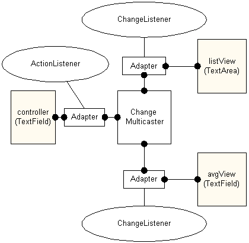
The problem with using this architecture is that the stateChanged
method doesn't contain any relevant data (it contains a
ChangeEvent). The view objects have to be able to go get the
model's data.
Ideally, what you want to do is pass some model data to the
stateChanged() method. In this case, you could simply pass
the complete, updated list. The reason Swing does not allow this probably
has to do with the strong typing contained in the Java package. Perhaps
you could create another interface called ObjectStateChanged,
and an object could be passed, in addition to the ChangeEvent.
This is less attractive in Java since the object has to be downcast and a
method call made from within the view to the model. It's best to keep the
model and view "ignorant" of each other.
You can solve this problem using adapters to establish the model-view
relationship. The adapter acts as a ChangeListener of the model,
rather than the view. The essential difference from the previous scenario is
that the adapter contains type and method information about the model rather
than the view. The constructor for the adapter has handles to both model and
view as its parameters.
The following is an implementation of such an arrangement. It is similar to the
prior example with an additional view, avgView that maintains a
running average of entered numbers. The other two objects acquired new names
to reflect their roles in the MVC relationship. The textField
object is now called controller, while the textList
object is now called listView.
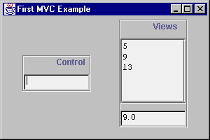
There are three primary classes involved:
-
ListView contains a view based on a
JTextArea, as before.
-
IntVectorModel is a vector model that
holds the numbers.
-
FirstMVC contains the frame, adapters
and main method.
(The controller and avgView objects are
JTextField objects.)
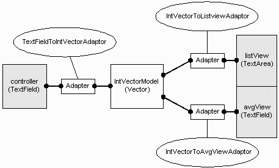
ListView
The ListView will act as a view to the
IntVectorModel. It is a simple extension of a
JTextArea. It does some initialization in the constructor
and contains a changed() method, which the adapter knows
to call. This changed method receives data from the List
(model) in the for of a Vector.
import java.util.*;
import javax.swing.*;
public class ListView extends JTextArea {
public ListView(int n) {
super("", n, 10);
setEditable(false);
}
/* This is NOT tied to a particular model's event.
* An adaptor is used to isolate the model's type
* from the view.
*
* Method called by adapter
* resets JTextArea and copies the data model
* Vector back in
*/
public void changed (Vector v) {
setText("");
Enumeration e = v.elements();
while (e.hasMoreElements()) {
Integer i = (Integer)e.nextElement();
append (i.toString() + "\n");
}
}
}
|
IntVectorModel
The IntVectorModel class contains the list of numbers and
tracks and notifies ChangeListener objects using an
EventListenerList. Take a close look at how to maintain a event
listener list with EventListenerList.
import java.util.*;
import javax.swing.*;
import javax.swing.event.*;
public class IntVectorModel {
protected Vector data = new Vector();
protected EventListenerList changeListeners =
new EventListenerList();
public IntVectorModel() {
}
public void addElement(int i) {
data.addElement(new Integer(i));
fireChange();
}
public Vector getData() {
return data;
}
// Listener notification support
public void addChangeListener(ChangeListener x) {
changeListeners.add (ChangeListener.class, x);
// bring it up to date with current state
x.stateChanged(new ChangeEvent(this));
}
public void removeChangeListener(ChangeListener x) {
changeListeners.remove (ChangeListener.class, x);
}
protected void fireChange() {
// Create the event:
ChangeEvent c = new ChangeEvent(this);
// Get the listener list
Object[] listeners =
changeListeners.getListenerList();
// Process the listeners last to first
// List is in pairs, Class and instance
for (int i
= listeners.length-2; i >= 0; i -= 2) {
if (listeners[i] == ChangeListener.class) {
ChangeListener cl =
(ChangeListener)listeners[i+1];
cl.stateChanged(c);
}
}
}
}
|
FirstMVC
The FirstMVC class is where the MVC framework is assembled.
It creates a view and two models and places adapters between them.
/* Demonstrates use of MVC for GUI design: interaction
* *between* components. The model is a Vector of
* numbers. The views are a list of the numbers and
* the average of the numbers. The Views do not
* directly listen for changes from the model. Adaptors
* are used to isolate type information (promoting
* flexibility) from the model/views.
*
* Really the only Swing part is the ChangeListener
* stuff (plus a BoxLayout).
*/
import java.awt.*;
import java.awt.event.*;
import javax.swing.*;
import javax.swing.event.*;
import java.util.*;
public class FirstMVC extends JFrame {
// The initial width and height of the frame
public static int WIDTH = 300;
public static int HEIGHT = 200;
// a View
ListView listView = new ListView(5);
// Another View
TextField avgView = new TextField(10);
// the Model
IntVectorModel model = new IntVectorModel();
// the Controller
TextField controller = new TextField(10);
/**Adaptor mapping IntVector to ListView;
* Hide specific types in adaptor rather
* than having view/model know about each other.
*
* A real system would allow the model to indicate
* WHAT had changed (for efficiency of execution
* and simpler design).
*/
private static class IntVectorToListviewAdaptor
implements ChangeListener {
IntVectorModel model;
ListView view;
public IntVectorToListviewAdaptor(
IntVectorModel m, ListView v) {
model = m;
view = v;
}
public void stateChanged(ChangeEvent e) {
view.changed(model.getData());
}
}
private static class IntVectorToAvgViewAdaptor
implements ChangeListener {
IntVectorModel model;
TextField view;
public IntVectorToAvgViewAdaptor(
IntVectorModel m, TextField v) {
model = m;
view = v;
}
public void stateChanged(ChangeEvent e) {
double avg = 0.0;
Vector d = model.getData();
Enumeration enum = d.elements();
while (enum.hasMoreElements()) {
Integer i = (Integer)enum.nextElement();
avg += i.intValue();
}
if (d.size()>0)
avg = avg / d.size();
view.setText(""+avg);
}
}
private static class TextFieldToIntVectorAdaptor
implements ActionListener {
IntVectorModel model;
TextField controller;
public TextFieldToIntVectorAdaptor(
TextField c, IntVectorModel m) {
model = m;
controller = c;
}
public void actionPerformed(ActionEvent e) {
String n = controller.getText();
controller.setText(""); // clear txt field
try {
model.addElement(Integer.parseInt(n));
} catch(NumberFormatException nfe) {
System.err.println("bad num: '"+n+"'");
}
}
}
public FirstMVC(String lab) {
super(lab);
// Display Controller
JPanel controlPanel = new JPanel();
controlPanel.setBorder (
BorderFactory.createEtchedBorder());
controlPanel.setLayout(new
BoxLayout(controlPanel,BoxLayout.Y_AXIS));
JLabel ctitle = new JLabel("Control");
ctitle.setHorizontalTextPosition(JLabel.CENTER);
controlPanel.add(ctitle);
controlPanel.add(Box.createVerticalStrut(10));
controlPanel.add(controller);
Container c = getContentPane();
c.setLayout (new FlowLayout ());
c.add(controlPanel);
c.add(Box.createHorizontalStrut(30));
// Display Views
JPanel viewPanel = new JPanel();
viewPanel.setBorder (
BorderFactory.createEtchedBorder());
viewPanel.setLayout(
new BoxLayout(viewPanel,BoxLayout.Y_AXIS));
JLabel title = new JLabel("Views");
viewPanel.add(title);
title.setHorizontalAlignment(JLabel.CENTER);
title.setHorizontalTextPosition(JLabel.CENTER);
viewPanel.add(Box.createVerticalStrut(10));
viewPanel.add(new JScrollPane(listView));
viewPanel.add(Box.createVerticalStrut(10));
viewPanel.add(avgView);
c.add(viewPanel);
// Hook the Controller up to the Model
TextFieldToIntVectorAdaptor CM =
new TextFieldToIntVectorAdaptor(
controller, model);
controller.addActionListener(CM);
// Hook up the simple avg View up to the Model
IntVectorToAvgViewAdaptor MV1 =
new IntVectorToAvgViewAdaptor(model,avgView);
model.addChangeListener(MV1);
// Connect the View to the Model via the adapter,
// which isolates type information from each other.
IntVectorToListviewAdaptor MV2 =
new IntVectorToListviewAdaptor(model,listView);
model.addChangeListener(MV2);
}
public static void main(String args[]) {
FirstMVC frame =
new FirstMVC("First MVC Example");
frame.addWindowListener(new WindowAdapter() {
public void windowClosing(WindowEvent e) {
System.exit(0);
}
});
frame.setSize(WIDTH, HEIGHT);
frame.setVisible(true);
}
}
|
Now that you have a general feeling for the Model/View/Controller architecture,
take a look at some of the JComponent objects that take advantage
of them.
JTree
Swing has a very flexible set of classes for creating tree controls. The
JTree class is the basis for presenting hierarchical data.
Support classes and interfaces are found in the javax.swing.tree
package.
Three interfaces work in conjunction to allow developers to customize the model
and view of a tree, TreeModel, TreeSelectionModel,
and TreeCellRenderer. A fourth interface, TreeNode,
describes what is represented at each node of the tree.
TreeModel
The TreeModel interface describes a JTree's
underlying data model. JTree contains a property, Model, with
access methods getModel() and setModel(), that
determines which TreeModel a JTree uses. The
TreeModel interface specifies how a tree is mapped over a data
structure with the following methods:
getChild (Object parent, int index)
getChildCount (Object parent)
getIndexOfChild (Object parent, Object child)
getRoot()
isLeaf (Object node)
|
Three additional methods, addTreeModelListener(),
removeTreeModelListener(), and valueForPathChanged()
deal with adding, removing, and notifying event listeners respectively. These
listeners are notified of changes in the TreeModel by receiving
TreeModelEvent messages.
An object that defines these methods can operate as a model for
a JTree. The DefaultTreeModel class is
a simple implementation of TreeModel that explicitly
uses TreeNode and MutableTreeNode objects
(described next).
TreeNode
JTree objects are built from TreeNode objects, which
are simple representations of a tree node. They have zero or one parent nodes
and zero or more child nodes. There is a rich set of methods in the
DefaultMutableTreeNode class for viewing and manipulating nodes
in a tree. This class implements the MutableTreeNode interface,
which extends the TreeNode interface. This is a partial listing
of some of the more useful methods. Some of these methods are analogous
methods to TreeModel, except they deal specifically with
TreeNode implementers, instead of the generic Object
.
| TreeNode |
getParent() |
Returns parent TreeNode |
children() |
Returns an enumeration of the node's children |
isLeaf() |
Returns true if the node has no children |
getChildAt(int index) |
Returns the child at index in this node's child array |
| MutableTreeNode |
insert (MutableTreeNode node, int index) |
Inserts a node as a child at index |
remove(int index) |
Removes the child at index in the tree's child array,
sets parent to null |
remove (MutableTreeNode node) |
Removes the child node from the tree and sets parent to
null |
setParent (TreeNode node) |
Moves node and its descendants to a different place in
the tree |
|
DefaultMutableTreeNode |
add (MutableTreeNode node) |
Inserts node as child at end of the tree's child array
|
getRoot() |
Returns the root TreeNode
|
getLevel() |
Returns the node's tree level
|
getNextSibling() |
Returns the next sibling of the node |
isNodeSibling (TreeNode node) |
Returns true if current node is a sibling to the
TreeNode parameter |
getSharedAncestor (DefaultMutableTreeNode node) |
Returns the nearest common ancestor between the current node and
DefaultMutableTreeNode parameter |
isNodeChild (TreeNode node) |
Returns true if the current TreeNode
is a child of the node parameter |
preorderEnumeration() |
Conducts a preorder traversal rooted at this node and returns
an enumeration of TreeNode objects |
postorderEnumeration() |
Conducts a postorder traversal rooted at this node and returns
an enumeration of TreeNode objects |
pathFromAncestorEnumeration (TreeNode node) |
Returns an enumeration of the path from ancestor to
node |
Optionally, a MutableTreeNode can hold a handle to an arbitrary
object with the userObject() property and the
setUserObject() access method. The getUserObject()
method is a part of DefaultMutableTreeNode. This way, a
JTree can hold any objects. The toString() method of
DefaultMutableTreeNode returns the result of the
userObject.toString() method or null if
userObject() is null.
TreeSelectionModel
TreeSelectionModel is an interface that specifies how the user
may select a path of arbitrary objects. JTree uses it to set up
selection rules.
DefaultTreeSelectionModel is a simple implementation of
TreeSelectionModel. It allows for the usual selection paradigm
that users are accustomed to (i.e. selecting files in a directory).
TreeCellRenderer
The TreeCellRenderer interface is used by JTree
to specify a component that will visually represent nodes in the tree. For
instance, the default cell renderer is DefaultTreeCellRenderer,
which uses open and closed turners next to a folder for containers root nodes
and a document for leaf nodes (see example below). Custom appearance can be
defined by creating classes that implement the TreeCellRenderer
interface, which contains only one method:
getTreeCellRendererComponent(JTree tree, Object value, boolean
selected, boolean expanded, boolean leaf, int row, boolean hasFocus)
|
Returns the component that will be used for rendering nodes.
|
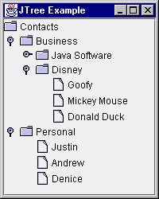
Using the default model and view of a JTree, you can easily
create a file directory style tree. You do have to make sure you place the
tree in a JScrollPane in case there is insufficient display
space.
public class JTreePanel extends JPanel {
JTreePanel() {
// Set the layout to hold only one component
setLayout(new BorderLayout());
// Create root node of tree
DefaultMutableTreeNode root =
new DefaultMutableTreeNode("Contacts");
// Create 1st level child
DefaultMutableTreeNode level1 =
new DefaultMutableTreeNode("Business");
// Add 1st level child under root node
root.add(level1);
// Create and add 2nd level child
DefaultMutableTreeNode level2 =
new DefaultMutableTreeNode("Java Software");
level1.add(level2);
// Create and add some 3rd level leaf nodes
level2.add(new DefaultMutableTreeNode(
"James Gosling"));
level2.add(new DefaultMutableTreeNode(
"Frank Yellin"));
level2.add(new DefaultMutableTreeNode(
"Tim Lindholm"));
// Create and add another 2nd level child
level2 = new DefaultMutableTreeNode(
"Disney");
level1.add(level2);
// Create and add some 3rd level leaf nodes
level2.add(new DefaultMutableTreeNode(
"Goofy"));
level2.add(new DefaultMutableTreeNode(
"Mickey Mouse"));
level2.add(new DefaultMutableTreeNode(
"Donald Duck"));
// Create and add another 1st level child
level1 = new DefaultMutableTreeNode(
"Personal");
root.add(level1);
// Create and add some 2nd level leaf nodes
level1.add(new DefaultMutableTreeNode(
"Justin"));
level1.add(new DefaultMutableTreeNode(
"Andrew"));
level1.add(new DefaultMutableTreeNode(
"Denice"));
// Create a tree from the root
JTree tree = new JTree(root);
// Place tree in JScrollPane
JScrollPane pane = new JScrollPane(jtree);
add(pane, BorderLayout.CENTER);
}
}
|
Certain look-and-feel classes provide the ability to set client
properties to alter appearance. For example, the tree for the Metal
look and feel has a lineStyle property that allows you to show
lines connecting cells in a JTree. The following addition
would change the above program to display the lines showing the new screen:
tree.putClientProperty
("JTree.lineStyle", "Angled");
The putClientProperty() method is inherited from
JComponent. The using of these properties is done through the
javax.swing.plaf.* class.
Magercises
- Tree Views
- Custom JTree Rendering
JList and JComboBox Revisited
With the introduction of MVC, you can do more with a JList or
JComboBox, as well as just about every other
JComponent. By associating a data model to the component, and
a way to render a view of the model, you can create more complex display
components. To demonstrate MVC within these two components, you can use the
same data model for both a JList and JComboBox
because the ComboBoxModel extends the ListModel.
Also, they both have the same renderer interface: ListCellRenderer.
This example includes a button that adds an element to the data model when
selected. Notice that both the JList and JComboBox
contents change by just changing the data model.
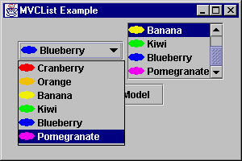
public class MVCListPanel extends JPanel {
MVCListPanel() {
final ImageListModel ilm = new ImageListModel();
JComboBox combo = new JComboBox(ilm);
combo.setRenderer(new ImageCellRenderer());
combo.setSelectedIndex(0);
add(combo);
JList list = new JList (ilm);
list.setCellRenderer(new ImageCellRenderer());
list.setSelectedIndex(0);
list.setVisibleRowCount(4);
ListSelectionModel lsm = list.getSelectionModel();
lsm.setSelectionMode
(ListSelectionModel.SINGLE_SELECTION);
JScrollPane pane = new JScrollPane (list);
add(pane);
JButton jb = new JButton ("Add to Model");
final Color color[] = {Color.red, Color.orange,
Color.yellow, Color.green, Color.blue,
Color.magenta};
jb.addActionListener (new ActionListener() {
Hashtable elem;
public void actionPerformed(ActionEvent e) {
int i = (int)(Math.random()*color.length);
elem = new Hashtable();
elem.put ("label", "Label-" + i);
elem.put ("icon", new AnOvalIcon(color[i]));
ilm.addElement (elem);
}
});
add (jb);
}
static class ImageListModel extends DefaultComboBoxModel {
private static final Color color[] =
{Color.red, Color.orange, Color.yellow,
Color.green, Color.blue, Color.magenta};
private static final String label [] =
{"Cranberry", "Orange", "Banana",
"Kiwi", "Blueberry", "Pomegranate"};
public ImageListModel () {
Icon icon;
for (int i=0, n=label.length; i<n ;i++) {
icon = new AnOvalIcon (color[i]);
Hashtable result = new Hashtable();
result.put ("label", label[i]);
result.put ("icon", icon);
addElement(result);
}
}
}
static class ImageCellRenderer
implements ListCellRenderer {
private boolean focused = false;
private JLabel renderer;
public ImageCellRenderer () {
renderer = new JLabel();
renderer.setOpaque (true);
}
public Component getListCellRendererComponent(
JList list, Object value, int index,
boolean isSelected, boolean cellHasFocus) {
if (value == null) {
renderer.setText("");
renderer.setIcon(null);
} else {
Hashtable h = (Hashtable) value;
renderer.setText((String)h.get ("label"));
renderer.setIcon((Icon)h.get ("icon"));
}
renderer.setBackground (isSelected ?
SystemColor.textHighlight :
SystemColor.text);
renderer.setForeground (isSelected ?
SystemColor.textHighlightText :
SystemColor.textText);
return renderer;
}
}
static class AnOvalIcon implements Icon {
Color color;
public AnOvalIcon (Color c) {
color = c;
}
public void paintIcon (Component c, Graphics g,
int x, int y) {
g.setColor(color);
g.fillOval (x, y,
getIconWidth(), getIconHeight());
}
public int getIconWidth() {
return 20;
}
public int getIconHeight() {
return 10;
}
}
|
As just demonstrated, the JList in Swing can be very different
from its AWT equivalent when it participates in an MVC relationship.
Three interfaces work in conjunction to allow developers to customize the
model and view of a list box, ListModel,
ListSelectionModel, and ListCellRenderer.
ListModel
The ListModel interface is a general model for a list of objects.
It specifies the data to be represented by the JList. It is a
fairly simple interface, containing four methods:
Object getElementAt(int index);
int getSize();
void addListDataListener(ListDataListener listener);
void removeListDataListener(
ListDataListener listener);
|
The getElementAt() method returns a single data element
representing a position in the JList at the index. The
getSize() method returns the number of elements in the
model, and therefore in the JList. The final two methods
maintain a list of view objects that are interested in changes to the
model. The DefaultListModel class manages the listener
list for you, through its superclass AbstractListModel.
Then, when a ListDataEvent happens, you would notify the
listeners with one of the following methods:
fireContentsChanged() |
To be called after
an item in list changes
|
fireIntervalAdded() |
To be called after a
set of items is added to list
|
fireIntervalRemoved() |
To be called after
a set of items is removed to list
|
The ComboBoxModel interface extends ListModel
adds two more methods to manage the selected item:
getSelectedItem() |
returns currently selected item
|
setSelectedItem(Object item) |
sets currently
selected item to parameter, if present
|
ListSelectionModel
ListSelectionModel is an interface that specifies how the user
may select a set of arbitrary ranges of objects. JList uses it
to set up selection rules. (JComboBox manages selection within
its model.)
DefaultListSelectionModel is a simple implementation of
ListSelectionModel. The selection model describes whether
or not a JList is in single or multi-selection mode.
To change modes:
model.setSelectionMode (int mode)
Available modes are:
ListSelectionModel.SINGLE_SELECTION
ListSelectionModel.SINGLE_INTERVAL_SELECTION
ListSelectionModel.MULTIPLE_INTERVAL_SELECTION (default)
ListCellRenderer
Another interface, ListCellRenderer, specifies how to get each
component to visually represent an item in a list or combo box. Similar to
other widgets with "renderer" interfaces, it contains one method:
getListCellRendererComponent (JList list, Object value, int index,
boolean isSelected, boolean cellHasFocus) |
Returns the component to be used for rendering a list item.
|
There is a default ListCellRenderer available, so you can just
add a String[] (or Vector) to the JList
and it will use the default renderer.
Swing Table Framework
Table support for Swing is found in the javax.swing.table package.
The package consists of a series of classes and interfaces to handle the
creation and display of columnar data. The way Swing supports tables is
another example of MVC. The table data model is found in the
TableModel interface, while the View/Controller part is found
in the JTable class.
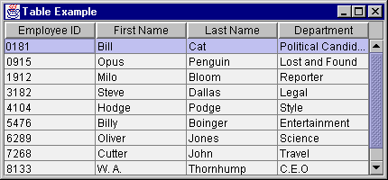
TableModel
The TableModel interface specifies how to describe the data in the
table cells, and requires the maintaining of a TableModelListener
list. Because whenever you create the table's data model you need to maintain
this list, there is an AbstractTableModel class which maintains
the list for you. The methods of TableModel consist of the
following:
int getColumnCount()
-
Returns count of columns in data model
int getRowCount()
-
Returns count of rows in data model
Class getColumnClass(int column)
-
Returns the class of the column
String getColumnName(int column)
-
Returns a non-unique name for the column header label
Object getValueAt(int row, int column)
-
Returns the current cell value for a row / column combination
void setValueAt(Object aValue, int row, int column)
-
Changes a cell value for a specific row / columns. Need to notify
listener list after change
via
fireTableChanged() method
of AbstractTableModel.
boolean isCellEditable(int row, int column)
-
Reports if the changing of a particular cell is permissible.
Returning
true means it is.
void addTableModelListener(TableModelListener l)
-
Add listener to
TableModelListener list
void removeTableModelListener(TableModelListener l)
-
Remove listener to
TableModelListener list
As mentioned above, AbstractTableModel maintains the listener
list for you. The list is available from the protected
listenerList variable. Then, when you subclass the adapter, you only
need to implement getColumnCount(), getRowCount(),
and getValueAt(). If you are creating a read-only table, the
setValueAt() method is stubbed out for you in
AbstractTableModel, and isCellEditable() returns
false by default, so you don't have to implement either. However,
when you do want to support editability and implement
setValueAt() (and isCellEditable()), you have to
remember to notify the listener list about the change. Besides changing the
data, use the fireTableCellUpdated() method of
AbstractTableModel to notify those interested in cell-level
changes:
class SomeDataModel extends AbstractTableModel {
...
public void setValueAt (Object aValue,
int row, int column) {
...
foo[row][column] = aValue;
fireTableCellUpdated (row, column));
...
}
|
JTable
Once you have the table's data model in something that implements the
TableModel interface, you can actually create and display the
table. There are actually two steps involved here:
JTable Example
-
Create table and associate data model. This can be done in one of
two ways:
JTable table = new JTable();
table.setModel (theModel);
or, more simply, just
JTable table = new JTable(theModel);
-
Display the table in a
JScrollPane in case there is
insufficient display space. This also creates and displays a set of
column headers for the table.
JScrollPane scrollPane = new JScrollPane (table);
To make life even easier, you don't even have to worry about
TableModel. If you have your data in a set of Vector
objects or Object arrays, you can pass that off to the
JTable constructor. However, using this manner to create
the table results in an editable table.
String columnNames[] = ...
String data[][] = ...
JTable table = new JTable (data, columnNames);
JScrollPane scrollPane = new JScrollPane (table);
More About JTable
There are many more capabilities available for JTable, like
support for editing, colorizing, simultaneous row-column selection, and
getting information about the selected entries. Be sure to examine the API
documentation for information on these additional capabilities.
The source for the JTable example is:
public class TablePanel extends JPanel {
TablePanel() {
setLayout (new BorderLayout());
// Create data model
EmployeeDataModel employeeModel =
new EmployeeDataModel();
// Create/setup table
JTable table = new JTable (employeeModel);
// Place table in JScrollPane
JScrollPane scrollPane =
new JScrollPane (table);
// Add to Screen
add(scrollPane, BorderLayout.CENTER);
}
}
class EmployeeDataModel extends AbstractTableModel {
// By extending AbstractTableModel, instead of
// implementing TableModel yourself,
// AbstractTableModel takes care of
// TableModelListener list management
String columns[] = {"Employee ID", "First Name",
"Last Name", "Department"};
String rows[][] = {
{"0181", "Bill", "Cat", "Political Candidate"},
{"0915", "Opus", "Penguin", "Lost and Found"},
{"1912", "Milo", "Bloom", "Reporter"},
{"3182", "Steve", "Dallas", "Legal"},
{"4104", "Hodge", "Podge", "Style"},
{"5476", "Billy", "Boinger", "Entertainment"},
{"6289", "Oliver", "Jones", "Science"},
{"7268", "Cutter", "John", "Travel"},
{"8133", "W. A.", "Thornhump", "C.E.O"},
{"9923", "Berke", "Breathed", "Editor"}
};
private int numColumns = columns.length;
private int numRows = rows.length;
public int getColumnCount() {
return numColumns;
}
public int getRowCount() {
return numRows;
}
public Object getValueAt (int row, int column) {
return rows[row][column];
}
public String getColumnName (int columnIndex) {
return columns[columnIndex];
}
public void setValueAt (Object aValue,
int row, int column) {
String cellValue;
if (aValue instanceof String)
cellValue = (String)aValue;
else
cellValue = aValue.toString();
rows[row][column] = cellValue;
fireTableCellUpdated (row, column);
}
public boolean isCellEditable(int row, int column) {
// first column is read-only
return (column != 0);
}
}
|
Instead of using the EmployeeDataModel, the JTable
could have been created with:
String columnNames[] = ...
String data[][] = ...
JTable table = new JTable (data, columnNames);
Magercise
-
Using JTextPane
Swing Text Framework
The way Swing treats text-based widgets is another example of the Complex
Widget Architecture application of MVC above.
Textual content (model) and its representation (view) are decoupled.
For an object to play the role of a model, it must implement the
Document interface or, more likely, extend one of its
"canned" implementations that ship with the Swing components.
Observers of a document extend the abstract View class or
one of its subclasses. A View usually takes the form of a
rendered component on the screen.
The illustration below shows how documents and views interact. UI events are
usually sent to the document. If a change occurs that a view is interested in,
the system generates a DocumentEvent and passes the event to the
view. This allows for the synchronization of the document and view. Events,
such as selection of text with the mouse, send the document event directly to
the view for processing.
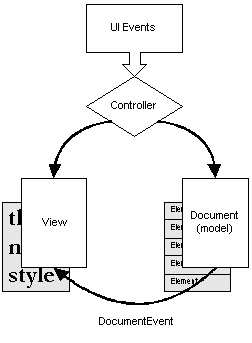
Document Interface
The Document interface describes an implementation-independent
structure for holding text. It supports markup of styles, notification of
changes and tracking of changes to allow for "undo" functionality.
Text is marked up with structures called elements, a concept taken from SGML.
Elements describe the state of a document with an arbitrary set of attributes.
You build a view from a type of element structure. Documents also contain
methods to describe the number of lines and paragraphs of text.
In most cases, a single document structure can describe a text component's
model. The Document interface however, does allow for multiple
structural representations of the text data. To do this, you create a document
that has multiple root elements, one for each structural representation. The
Swing team gives the following examples of where such an arrangement might be
useful:
- Logical document structure
- View projections
- Lexical token streams
- Parse trees
- Conversion to a format other than the native format
- Modification specifications
- Annotations
Document Implemented
Several convenience implementations of Document ship with
Swing. The simplest of them, AbstractDocument, is intended
primarily as a superclass to extend and form models that are more complete.
The primary contribution of AbstractDocument is its locking
mechanism. It implements the Read/Write Lock concurrency pattern to allow
either one writer or multiple readers access to the content. Writers must
wait for all observers of a previous change to be notified before they can
begin another mutation cycle.
AbstractDocument is the abstract superclass of two full-featured
document models, PlainDocument and
DefaultStyledDocument. The purpose of PlainDocument
is for fairly short and simple text. It manages textual content as a string,
and does not support history or undo operations.
DefaultStyledDocument allows for storage of formatted text
similar to Rich Text Format (RTF). It relies on structure elements to mark
up the text into styles. These style elements are associated with paragraph
marker elements.
Basic Swing Text Widgets
This MVC based text framework is very powerful but also very complex.
After all, most developers simply want to throw some text components into
a container and accept their pre-defined behavior. Fortunately, Swing can
hide the MVC mechanics from you. If you simply instantiate a text widget
and add it to a container a default document is generated, initialized,
and maintained for you. You can think of text widgets as
JTextComponents that have a ready-to-use delegate
(View) and a ready-to-use model (Document) operating
behind the scenes.
JTextPane and DefaultStyledDocument
The JTextPane component provides support for multi-attributed
text. No longer are you restricted to the single color or font limitations
of TextArea. With the help of a DefaultStyledDocument
for its model, and a good understanding of the javax.swing.text
package, you are well on your way to creating the next word processor or
language-sensitive editor.
Creating a JTextPane for complex text display requires two
simple steps. A third optional step is generally used also.
- Create a
DefaultStyledDocument to model for the data
DefaultStyledDocument doc
= new DefaultStyledDocument();
- Create a
JTextPane using the
DefaultStyledDocument
JTextPane pane = new JTextPane (doc);
- Place the
JTextPane into a JScrollPane
JScrollPane scrollPane = new JScrollPane(pane);
Once you have created your document, you can make various
AttributeSet objects to describe the content style:
static final String NORMAL = "Normal";
static final String ITALIC = "Italic";
static final String BIG = "Big";
// Setup initial style set
Hashtable paraStyles;
paraStyles = new Hashtable();
SimpleAttributeSet attr =
new SimpleAttributeSet();
paraStyles.put(NORMAL, attr);
attr = new SimpleAttributeSet();
StyleConstants.setItalic(attr, true);
paraStyles.put(ITALIC, attr);
attr = new SimpleAttributeSet();
StyleConstants.setFontSize(attr, 36);
paraStyles.put(BIG, attr);
|
You can also fill up the JTextPane, associating an attribute
set with each element in the StyledDocument:
// Clear out current document
pane.setStyledDocument(
doc = new DefaultStyledDocument());
// Get the NORMAL Style
AttributeSet defaultStyle =
(AttributeSet) paraStyles.get(NORMAL);
// Get the ITALIC Style
AttributeSet italicStyle =
(AttributeSet) paraStyles.get(ITALIC);
// Get the BIG Style
AttributeSet bigStyle =
(AttributeSet) paraStyles.get(BIG);
// Insert into pane
doc.insertString(doc.getLength(),
"Hello World\n", bigStyle);
doc.insertString(doc.getLength(),
"What's up Doc?\n", italicStyle);
doc.insertString(doc.getLength(),
"Boring...\n", defaultStyle);
|
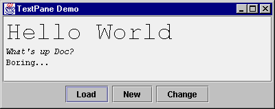
Changing Styles
Then, at the appropriate time, you can use either the various methods
shown in the following table of StyleConstants to change
the style of the selected contents within the JTextPane
or StyledDocument methods such
as setCharacterAttributes(),
setParagraphAttributes(), or just plain
setLogicalStyle() to change the document
characteristics. Just create a SimpleAttributeSet,
and configure any attribute you would like.
void setAlignment()
void setBackground()
void setBidiLevel()
void setBold()
void setComponent()
void setFirstLineIndent()
void setFontFamily()
void setFontSize()
void setForeground()
void setIcon()
void setItalic()
void setLeftIndent()
void setLineSpacing()
void setRightIndent()
void setSpaceAbove()
void setSpaceBelow()
void setSubscript()
void setSuperscript()
void setTabSet()
void setUnderline()
|
StyleConstants methods for changing attributes
of currently selected content. You will also need to
setCharacterAttributes()
or
setParagraphAttributes() the JTextPane. |
void replaceSelection()
void insertComponent()
void insertIcon() |
JTextPane methods to replace currently
selected content with a String, Component,
or Icon |
void setLogicalStyle() |
JTextPane method to changes Style
of current paragraph |
In some cases, you may want to wrap one of the style changing methods into an
ActionListener and make it available on a menu or a button.
To make things easier, most of these adapters have already been created for
you. With either of these methods, you won't have to worry about finding the
selected text to figure out what to change.
A third method of changing styles allows you to not worry about specific class
names, just functionality. The StyledEditorKit class provides a
minimal set of text actions as a series of inner classes as shown in the table.
StyledEditorKit.AlignmentAction |
AlignmentAction (String textAction, int alignment) |
StyledEditorKit.BoldAction |
BoldAction() |
StyledEditorKit.FontFamilyAction |
FontFamilyAction (String textAction, String family) |
StyledEditorKit.FontSizeAction |
FontSizeAction (String textAction, int size) |
StyledEditorKit.ForegroundAction |
ForegroundAction (String textAction, Color color) |
StyledEditorKit.ItalicAction |
ItalicAction() |
StyledEditorKit.StyledTextAction |
abstract parent of others |
StyledEditorKit.UnderlineAction |
UnderlineAction() |
In addition to StyledEditorKit, there are several other inner
classes, such as DefaultEditorKit. Most of these are useful
when you want to provide alternative input mechanisms for traversal within
the JTextPane. However, most of these are not public, they are
package private. The public DefaultEditorKit classes are shown
in the table.
DefaultEditorKit.BeepAction |
DefaultEditorKit.CopyAction |
DefaultEditorKit.CutAction |
DefaultEditorKit.DefaultKeyTypedAction |
DefaultEditorKit.InsertBreakAction |
DefaultEditorKit.InsertContentAction |
DefaultEditorKit.InsertTabAction |
DefaultEditorKit.PasteAction |
TextActions
Since several of the inner classes outside of StyledEditorKit
are not public, you need to access this functionality in another way. To
perform these operations you can ask a JTextComponent how to
do some functionality and it passes back something that implements
ActionListener. You usually just get back an inner class, but
you never need to know that. What you get back is an Action that
happens to implement the ActionListener interface. You then just
add this listener to your MenuItem, Button, or other
class.
The following program demonstrates how to support cut and paste
operations for a JTextArea. The actions are added
directly to a JToolBar, using its add()
method. This creates a JButton for each action and
places it on the toolbar.
Note:
If it is not necessary to customize the button label, the
JToolBar.add(anAction) call will be
sufficient.
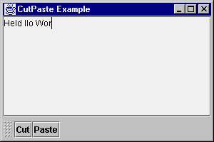
public class CutPaste extends JPanel {
CutPaste() {
setLayout (new BorderLayout (5, 5));
JTextArea jt = new JTextArea();
JScrollPane pane = new JScrollPane(jt);
add(pane, BorderLayout.CENTER);
// get the command table
Hashtable commands = new Hashtable();
Action[] actions = jt.getActions();
for (int i = 0; i < actions.length; i++) {
Action a = actions[i];
commands.put(a.getValue(Action.NAME), a);
}
JToolBar bar = new JToolBar();
AbstractAction cutAction = (AbstractAction)
commands.get (DefaultEditorKit.cutAction);
JButton button = bar.add(cutAction);
button.setText("Cut");
AbstractAction pasteAction = (AbstractAction)
commands.get (DefaultEditorKit.pasteAction);
button = bar.add(pasteAction);
button.setText("Paste");
add (bar, BorderLayout.SOUTH);
}
}
|
TextAction Table
Various classes provide String constants to help in working with
most of the text actions. This table shows the commands that have built-in
support in the text components, and also shows where the constants are located:
JTextComponent and DefaultEditorKit
(class variables) |
backwardAction
beepAction
beginAction
beginLineAction
beginParagraphAction
beginWordAction
copyAction
cutAction
defaultKeyTypedAction
deleteNextCharAction
deletePrevCharAction
downAction
endAction
endLineAction
endParagraphAction
endWordAction
forwardAction
insertBreakAction
insertContentAction
insertTabAction
nextWordAction
pageDownAction
pageUpAction
pasteAction
previousWordAction
readOnlyAction
selectAllAction
selectLineAction
selectParagraphAction
selectWordAction
selectionBackwardAction
selectionBeginAction
selectionBeginLineAction
selectionBeginParagraphAction
selectionBeginWordAction
selectionDownAction
selectionEndAction
selectionEndLineAction
selectionEndParagraphAction
selectionEndWordAction
selectionForwardAction
selectionNextWordAction
selectionPreviousWordAction
selectionUpAction
upAction
writableAction |
JTextField adds (class variable) |
notifyAction |
JTextPane adds from StyledEditorKit
(strings, not class variables) |
center-justify
left-justify
right-justify
font-bold
font-italic
font-underline
font-size-8
font-size-10
font-size-12
font-size-14
font-size-16
font-size-18
font-size-24
font-size-36
font-size-48
font-family-Monospaced
font-family-SansSerif
font-family-Serif |
The classes implementing the Action interface and returned from
the various getActions() methods are AbstractAction
subclasses. These AbstractAction subclasses bind the
enabled property of the Action, such that components
associated with it can listen for the property change and change their
enabled state to match the action.
When you add a component to a JMenuBar or JToolBar
with the add(Action) method, this automatically binds the
component to the action. So, disabling or enabling the action automatically
propagates to all associated listeners. This allows you to more easily change
the state of a user interface by just changing one object, the action, instead
of manually remembering all the objects associated to the action.
To make this work with your own components, you have to manually associate a
PropertyChangeListener to the Action as well as the
desired response.
To demonstrate with JToolBar and JMenuBar, the
following program provides a menu item and a button on a toolbar to make text
in a JTextPane bold. Initially, both are enabled. When the button
at the bottom of the screen is selected, the enabled property of the
action is toggled, either from off to on, or on to off. By changing the action
state, this automatically propagates to the menu item and toolbar button,
changing their states accordingly.
public class ActionSet extends JFrame {
public ActionSet(String lab) {
super (lab);
JTextPane tp = new JTextPane ();
Hashtable commands = new Hashtable();
Action actions[] = tp.getActions();
for (int i = 0; i < actions.length; i++) {
Action a = actions[i];
commands.put(a.getValue(Action.NAME), a);
}
final Action boldAction =
(Action)commands.get ("font-bold");
// Setup MenuBar
JMenu menu = new JMenu("Edit");
JMenuItem menuitem = menu.add (boldAction);
menuitem.setText("Bold");
JMenuBar menubar = new JMenuBar();
menubar.add(menu);
// Setup ToolBar
JToolBar toolbar = new JToolBar();
JButton button = toolbar.add(boldAction);
button.setText("Bold");
// Setup toggle button
JButton toggleButton =
new JButton("Toggle Bold Action");
ActionListener toggleListener =
new ActionListener() {
public void actionPerformed (ActionEvent e) {
boolean enabled = boldAction.isEnabled();
boldAction.setEnabled(!enabled);
}
};
toggleButton.addActionListener (toggleListener);
// Setup screen
Container contentPane = getContentPane();
JScrollPane scrollPane = new JScrollPane(tp);
contentPane.add(menubar, BorderLayout.NORTH);
contentPane.add(scrollPane, BorderLayout.CENTER);
contentPane.add(toolbar, BorderLayout.EAST);
contentPane.add(toggleButton, BorderLayout.SOUTH);
}
}
|
View and ViewFactory Interfaces
The View interface specifies a representation based on part or
all of a document. It contains a paint() method for rendering
and layout. ViewFactory describes how Views are
mapped to structure elements. It contains a method called create()
that when given an Element returns a View. Often a
ViewFactory is passed to a method with an accompanying
Shape object, allowing for dynamic generation of views.
Magercise
-
Using JTable
Creating a New Look
Creating a different look and feel is not for everyone. Most people will just
work with the look-and-feels provided. For simple user interface changes, you
can install a new resource with the UIManager. For instance, the
following source will change the icon on a JSlider:
Icon icon = new ImageIcon(...);
IconUIResource iconResource = new IconUIResource(icon);
UIDefaults defaults = UIManager.getDefaults();
defaults.put(
"Slider.horizontalThumbIcon", iconResource);
|
To discover the names (and current values) of the available properties,
just ask. These properties are different from the ones set with
JComponent.putClientProperty() and are standardized across
look and feels.
import java.util.*;
import javax.swing.*;
public class ListProps {
public static void main (String args[]) {
Hashtable defaultProps = UIManager.getDefaults();
Enumeration enum = defaultProps.keys();
while (enum.hasMoreElements()) {
Object key = enum.nextElement();
System.out.println(
key + "\t" + defaultProps.get(key));
}
System.exit(0);
}
}
|
For those interface designers who want total control of a user's experience,
support is available. The LookAndFeel class is where you start.
However, what you will probably do is just extend an existing look-and-feel
class (quite possibly BasicLookAndFeel) to support some of your
own styles. That way, you won't have to provide everything at once. To
demonstrate, you can create your own look and feel, MyLookAndFeel,
that changes the look of the JButton to have multi-color
triangular right and left borders, depending upon the state of the button.
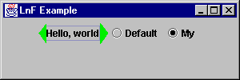
The LookAndFeel Class
If you extend MetalLookAndFeel, the only thing you need to do
with your LookAndFeel class is map your UI classes to the appropriate
UI names. These names can be found in the javax.swing.plaf
package, or you can ask a particular component with the
getUIClassID() method.
You also have to provide your look-and-feel with an ID, name, and description
via getID(), getName(), and
getDescription(), respectively.
package my;
import javax.swing.UIDefaults;
import javax.swing.plaf.metal.MetalLookAndFeel;
public class MyLookAndFeel extends MetalLookAndFeel {
public String getID() {
return "My";
}
public String getName() {
return "My Look and Feel";
}
public String getDescription() {
return "The My Look and Feel";
}
public boolean isNativeLookAndFeel() {
return false;
}
public boolean isSupportedLookAndFeel() {
return true;
}
protected void initClassDefaults(UIDefaults table) {
super.initClassDefaults(table);
table.put ("ButtonUI", "my.MyButtonUI");
}
}
|
The ButtonUI Class
After defining which UI classes you are going to create, you need to actually
create them. In the case of MyButtonUI, the only real difference
is the installation of the border and defining what part of the button is
darkened when the button is pressed. Because of this, the class is able to
inherit most of its behavior, such as drawing the button and detecting input
focus.
Here is the code for the ButtonUI. The installUI,
uninstallUI, and createUI methods deal with
installing, uninstalling, and creating the user interface. And
paintButtonPressed deals with the differences in painting
the pressed button. The remaining behavior is inherited from
MetalButtonUI. In this case, however, the majority
of the differences between the two is left for the border class.
package my;
import java.awt.*;
import java.awt.event.*;
import javax.swing.*;
import javax.swing.border.*;
import javax.swing.plaf.ComponentUI;
import javax.swing.plaf.metal.*;
public class MyButtonUI extends MetalButtonUI {
private final static Border defaultBorder =
MyButtonBorder.getButtonBorder();
private Border savedBorder;
protected static MyButtonUI buttonUI;
public static ComponentUI createUI (JComponent c) {
if (buttonUI == null) {
buttonUI = new MyButtonUI();
}
return buttonUI;
}
public void installUI (JComponent c) {
super.installUI (c);
savedBorder = c.getBorder();
c.setBorder (defaultBorder);
}
public void uninstallUI (JComponent c) {
if (c.getBorder() == defaultBorder)
c.setBorder(savedBorder);
super.uninstallUI (c);
}
protected void paintButtonPressed(
Graphics g, AbstractButton b) {
if (b.isOpaque()) {
Dimension size = b.getSize();
Insets insets = b.getBorder().getBorderInsets(b);
g.setColor (getSelectColor());
g.fillRect (insets.left, insets.top,
size.width-insets.left-insets.right,
size.height-insets.top-insets.bottom);
}
}
}
|
The Button Border
The MyButtonBorder class is the worker class of this new
particular user interface object. Here, the border needs to draw triangles
in the insets of the component. The state of the component determines the
color actually drawn.
package my;
import java.awt.*;
import javax.swing.*;
import javax.swing.border.*;
public class MyButtonBorder extends AbstractBorder {
private static Border buttonBorder =
new MyButtonBorder();
public static Border getButtonBorder() {
return buttonBorder;
}
public void paintBorder (Component c, Graphics g,
int x, int y, int width, int height) {
boolean pressed = false;
boolean focused = false;
if (c instanceof AbstractButton) {
AbstractButton b = (AbstractButton)c;
ButtonModel bm = b.getModel();
pressed = bm.isPressed();
focused = (pressed && bm.isArmed()) ||
(b.isFocusPainted() && b.hasFocus());
}
Insets in = getBorderInsets(c);
Polygon p1 = new Polygon ();
p1.addPoint (x+in.left, y);
p1.addPoint (x, y+(height/2));
p1.addPoint (x+in.left, y+height);
Polygon p2 = new Polygon ();
p2.addPoint (x+width-in.right, y);
p2.addPoint (x+width, y+(height/2));
p2.addPoint (x+width-in.right, y+height);
if (pressed) {
g.setColor (c.getForeground());
} else if (focused) {
g.setColor (SystemColor.green);
} else {
g.setColor (SystemColor.red);
}
g.fillPolygon (p1);
g.fillPolygon (p2);
}
public Insets getBorderInsets (Component c) {
return new Insets (5, 10, 5, 10);
}
}
|
Putting It All Together
And, that is all there is to it. Borrowing heavily from the Simple
example that comes with the Swing component set, the following demonstrates
all the hard work above. You can extend it as you add more customized
user interfaces to MyLookAndFeel. Notice that the interaction
with the JButton doesn't change.
import java.awt.*;
import java.awt.event.*;
import javax.swing.*;
public class MyExample extends JPanel {
private static String feel =
UIManager.getCrossPlatformLookAndFeelClassName();
public MyExample() {
// Create the buttons.
JButton button = new JButton ("Hello, world");
ActionListener myListener = new ActionListener() {
public void actionPerformed (ActionEvent e) {
String lnfName = null;
if (e.getActionCommand().equals ("My")) {
lnfName = "my.MyLookAndFeel";
} else {
lnfName = feel;
}
try {
UIManager.setLookAndFeel(lnfName);
Container c =
MyExample.this.getTopLevelAncestor();
SwingUtilities.updateComponentTreeUI (c);
c.validate();
} catch (Exception ex) {
System.err.println (
"Could not swap LookAndFeel: " + lnfName);
}
}
};
ButtonGroup group = new ButtonGroup();
JRadioButton basicButton =
new JRadioButton ("Default");
basicButton.setSelected(true);
basicButton.addActionListener (myListener);
group.add (basicButton);
JRadioButton myButton =
new JRadioButton ("My");
myButton.addActionListener (myListener);
group.add (myButton);
add (button);
add (basicButton);
add (myButton);
}
public static void main (String args[]) {
JFrame f = new JFrame ("LnF Example");
JPanel j = new MyExample();
f.addWindowListener(new WindowAdapter() {
public void windowClosing(WindowEvent e) {
System.exit(0);
}
});
f.getContentPane().add (j, BorderLayout.CENTER);
f.setSize (300, 100);
f.show();
}
}
|
Copyright � 1998-1999
MageLang Institute.
All Rights Reserved.
|
|